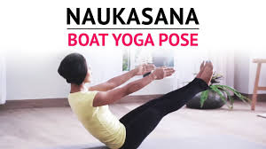

YOG ASAN
Yog Asan 1
Yog Asan 2
Yog Asan 3
Yog Asan 4
Trikonasana (Triangle Pose)
INFO OF TRIKONASANA
For vedio click here
Kursiasana (Chair Pose)
INFO OF KURSIASANA (Chair Pose)
For vedio click here
Naukasana (Boat Pose)

INFO OF NAUKASANA
For vedio click here